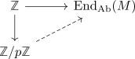

F_p vector space is p-torsion abelian group
Proposition
Let $p \in \mathbb{P}$ be a prime number and $G$ an abelian group. Suppose for each $g \in G$
Then $G$ is the underlying additive group of a $\mathbb{Z}/p \mathbb{Z}$ vector space.
Proof
Let $g \in G$ and $[m] \in \mathbb{Z}/p \mathbb{Z}$. Then define $[m] \cdot g = \sum_{i=1}^m g$.
This definition is welldefined, since for $[m] = [m +n p]$
Then one can check, that this multiplication give sa
Remark
this is a proof using methods from commutative algebra:
Let $M$ be an abelian group, $\mathrm{End}_{\mathrm{Ab}}(M)$ the ring consisting of group-isomorphism (under pointwise addition and composition).
Then a $K$ vector space structure is precisely a ring homomorphism $K \rightarrow \mathrm{End}_{\mathrm{Ab}}(M)$. If every element in $M$ is \(p\)-torsion, this amounts precisely to the statement that the map
is the zero morphism. So by the universal property of $\mathbb{Z} \rightarrow \mathbb{Z}/p \mathbb{Z}$ there exists an extension
